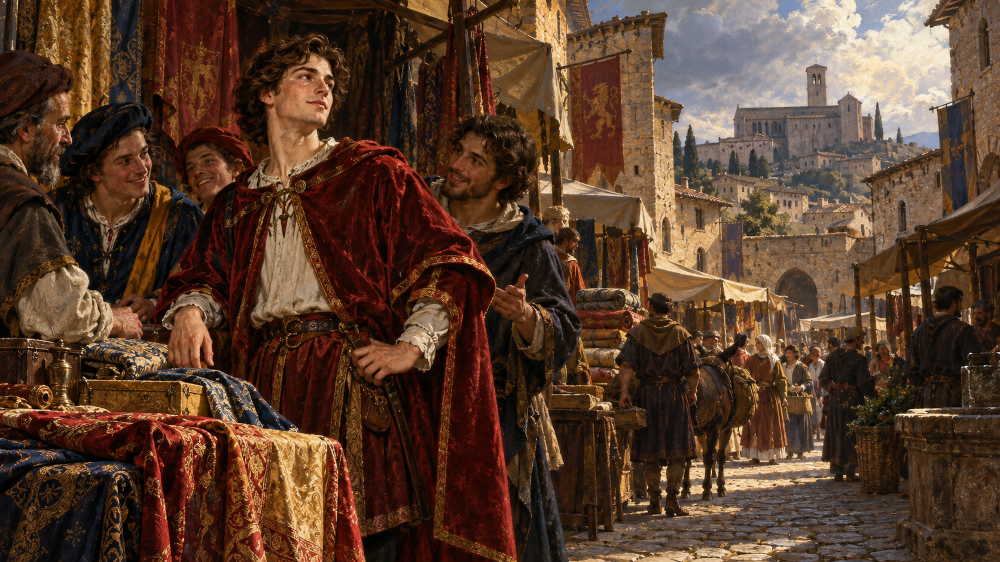
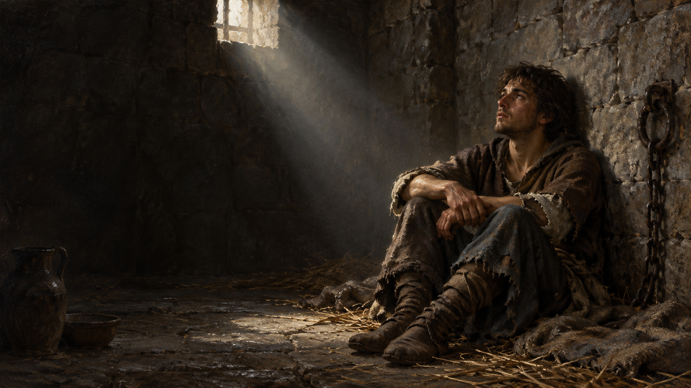
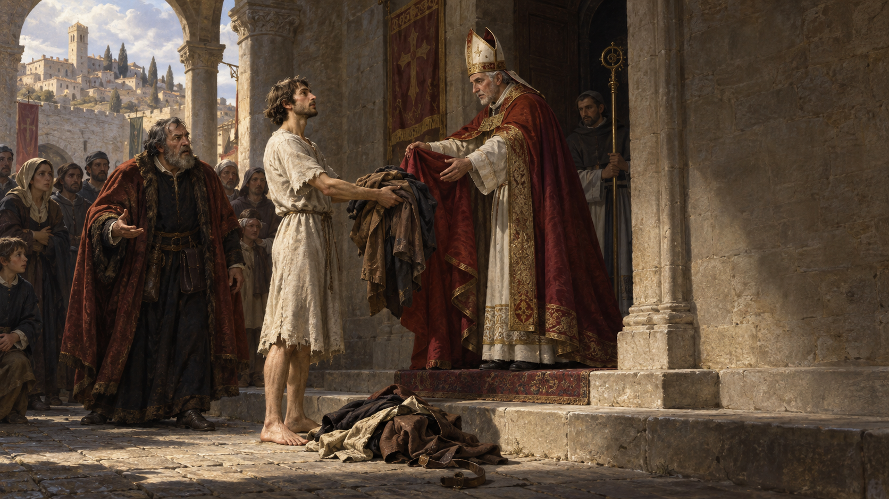
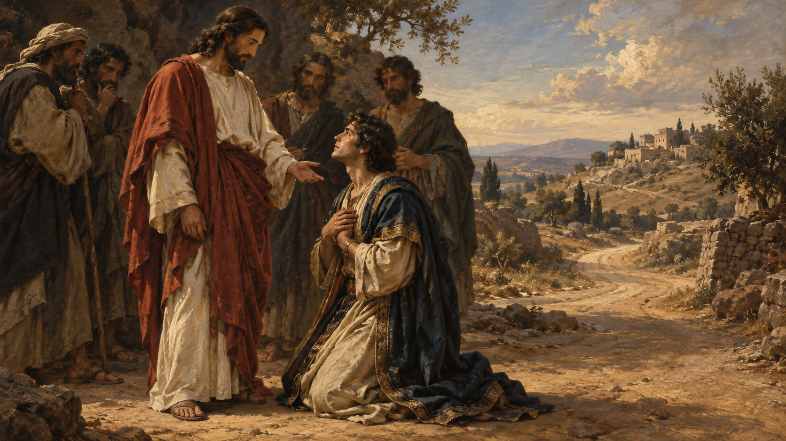
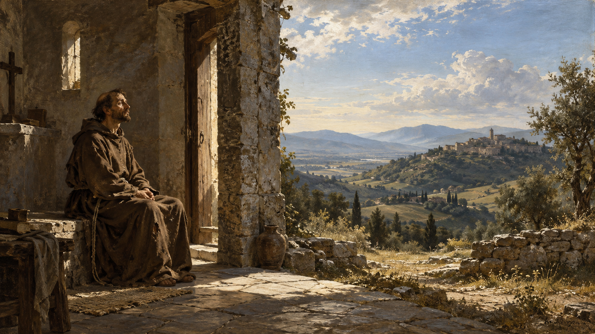
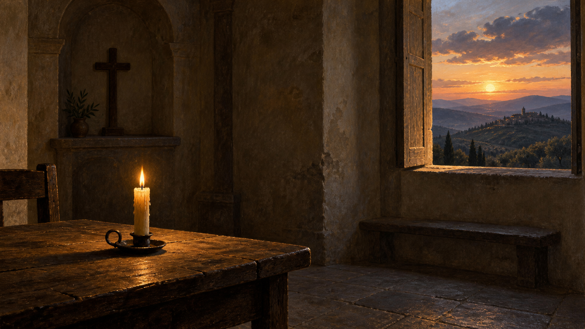

El hombre rico
Dios llama → el llamado cuesta → se marcha triste.
Una conversación sobre lo que defendemos
¿Qué estoy dispuesto a perder para no traicionar la verdad?
Asís · Francisco · nosotros
Abrir con la pregunta y dejarla respirar antes de explicar el recorrido.
Asís, ~1200
El apellido importa.
El honor importa.
La posición importa.
El punto de partida
Francisco nace en una familia que tiene dinero.
Su padre, Pietro di Bernardone, es un comerciante de telas acomodado. Francisco no comienza huyendo de la riqueza. Nace dentro de ella.
→ para avanzar

Antes del santo
No quería ser San Francisco.
Las primeras fuentes lo muestran atraído por la vida social y las aspiraciones caballerescas. Hay algo profundamente humano aquí: Francisco ya tiene una idea de quién quiere llegar a ser.

1202
1202
Francisco pasa aproximadamente un año prisionero. Más adelante intenta nuevamente una aventura militar y la abandona. No hay una conversión instantánea: comienza un proceso de ruptura interior.
Algo empieza a cambiar
Su antigua identidad empieza a perder fuerza.
Ésta no es simplemente una historia de «descubrió que el dinero era malo». Francisco comienza a descubrir que no necesita construir quién es mediante prestigio, dinero o reconocimiento.
Pero la conversión cuesta
Ahora tiene un precio.
Subrayar el cambio de nivel: ya no estamos hablando de una intuición privada. Algo interior empieza a tener consecuencias visibles y sociales.

Francisco queda sin nada
Su padre está delante.
El obispo está delante.
La ciudad observa.
El obispo lo cubre con su manto. Francisco renuncia también a la herencia paterna. Su gesto hace visible algo interior: ya no quiere que aquello que posee determine quién es.
¿Qué perdió?
Dejar esta pregunta abierta. No apresurarse a contestarla por el grupo.

Siglos antes…
Tiene dinero.
Es moralmente serio.
Busca la vida eterna.
Marcos 10, 17–27 · Antes de leer: ¿en qué momento cambia el encuentro?
Leer el pasaje o invitar a alguien del grupo a leerlo. Mantener la pregunta abierta antes de explicar.
“Jesús lo miró
y lo amó.
Primero lo amó.
Después lo confrontó.
La verdad difícil no nace del desprecio. Precisamente porque lo ama, Jesús toca aquello que el hombre no quiere entregar.
Éste es el detalle fundamental. Jesús no le dice una verdad difícil porque lo desprecia. Precisamente porque lo ama, toca aquello que el hombre no quiere entregar.
Una cosa te falta
“Vende lo que tienes…
ven y sígueme.”
El hombre se marcha triste.
Porque tenía mucho que perder.
El dinero puede significar mucho más que objetos: seguridad, control, posición, independencia, futuro, identidad. Jesús toca precisamente el lugar donde el hombre no es libre.
Dos hombres
Dios llama → el llamado cuesta → se marcha triste.
Dios llama → el llamado cuesta → se desprende.
No presentar a Francisco como alguien sin conflicto. La diferencia está en la respuesta cuando el llamado toca aquello que cada uno considera irrenunciable.
Dinero
También puede construir una identidad.
Conectar la imagen con la experiencia contemporánea: el problema no es solamente cuánto dinero tenemos, sino lo que ese dinero empieza a decirnos sobre quiénes somos.
Ego
Una historia sobre mí.
Entonces aparece algo peligroso:
la verdad.
La palabra ego aquí no significa simplemente arrogancia. Es el personaje que necesita que cierta versión de nosotros permanezca intacta para sentirse seguro.
Así empieza muchas veces la mentira
«No quiero quedar mal.»
Muchas veces no empezamos pensando «voy a mentir». Empezamos pensando: «No quiero quedar mal.» Prometí algo que no puedo entregar. Gasté demasiado. Mi negocio no va como digo. Cometí un error. Exageré lo que sé hacer.
La prueba
Dar un momento para que cada persona identifique una frase. Dejar que las respuestas surjan de forma natural.
Francisco también descubrió algo más
Incluso la pobreza puede convertirse en motivo de superioridad.
Años después Francisco ya no tiene riqueza.
Pero ahora tiene:
Incluso ser «el espiritual» puede convertirse en otro personaje que proteger.
Incluso la pobreza puede convertirse en motivo de superioridad. Incluso ser «el espiritual» puede convertirse en otro personaje que proteger.

La frase de Francisco
San Francisco de Asís · Admonición XIX
No mi sueldo.
No mi reputación.
No mis éxitos.
Leer la frase lentamente. No mi sueldo, no mi reputación, no mis éxitos, ni siquiera mi imagen de «buena persona».
Si recibo de Dios quién soy, la verdad deja de ser una amenaza.
Ya no tengo que defender constantemente al personaje.
La libertad no es sentir que nunca nos amenaza nada. Es no necesitar que nuestra imagen permanezca intacta para saber que tenemos valor.

Dos minutos
¿Qué verdad me cuesta mirar porque amenaza eso?
Pedir dos minutos reales de silencio. No llenar el espacio con música ni explicaciones. Dejar que la pregunta abra el diálogo de forma natural.
Cierre
¿Qué estoy dispuesto a perder para no traicionar la verdad?
«Cuanto es el hombre ante Dios, tanto es y no más.»
Cerrar sin añadir otra etapa. Leer la oración sólo si encaja con el grupo; después dejar unos segundos de silencio.